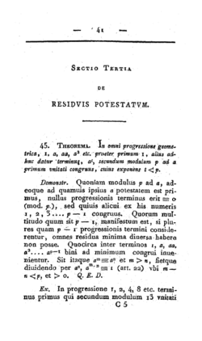

|
Your task is to evaluate a mysterious function on various inputs. The function is given by the following pseudocode: function magic(X, Y): R := 1 while Y > 0: R := R * X Y := Y - 1 return R mod 2011all the variables are non-negative integers, the operators have the usual semantics. InputEach input will contain several test cases, one test case per line. Each test case consists of two positive integers: X,Y The last line of the input will contain two zeros. OutputFor each test case print one line with the return value of magic(X,Y) |  |
1 24 10 2 2012 1 0 0
1 100 1